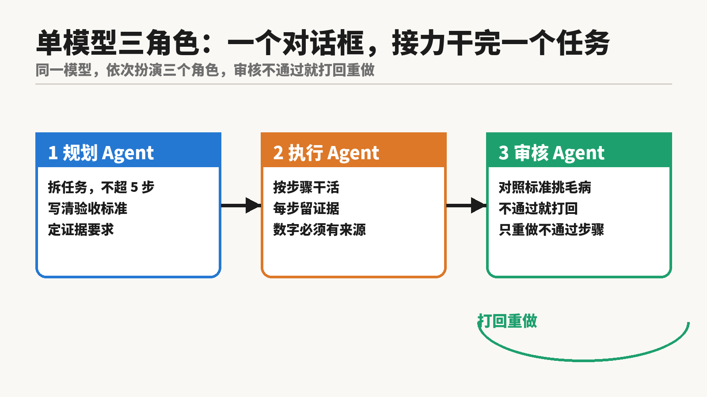
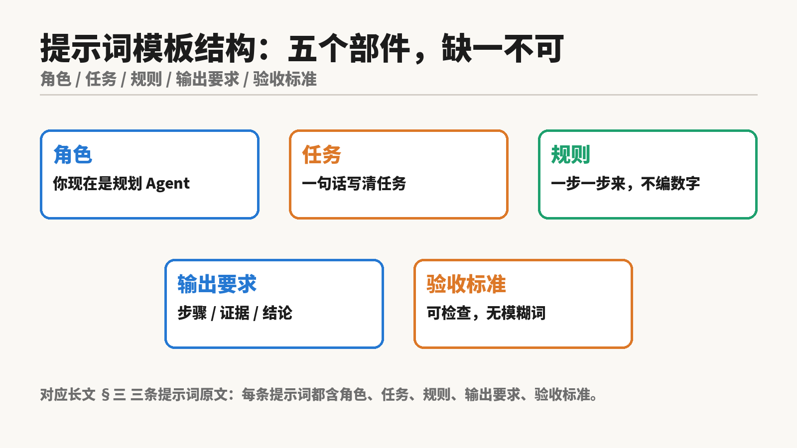
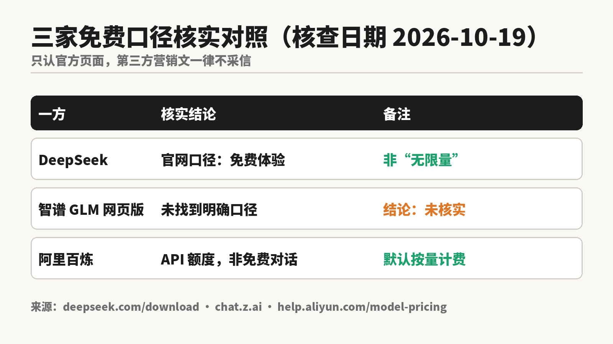
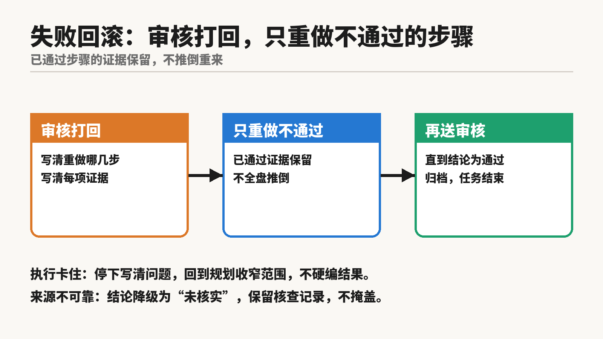
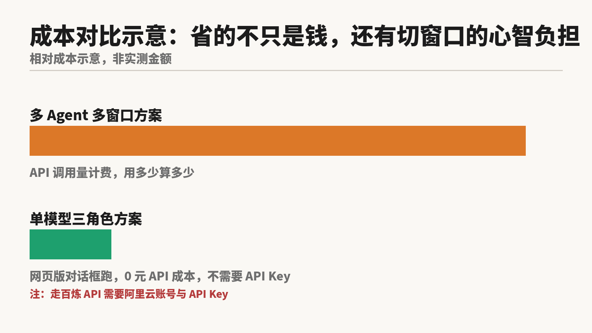

不用多开窗口，不用花 API 的钱，一个对话框就能跑完“规划、执行、审核”三个角色。
做法：同一个模型，在一次对话里依次扮演三个角色。规划 Agent 先把任务拆成步骤、写清验收标准；执行 Agent 按步骤干活，每一步留证据；审核 Agent 对照验收标准挑毛病，不合格就打回重做。三个角色互相挑刺，一个人干活容易放过自己的问题，就不容易漏过去。
本文给出的三角色提示词模板全文可直接复制使用，已整理成 Skill（待上传 GitHub），私信可取，丢给自己的 Agent 就能用。模板本身免费。在 DeepSeek 网页版对话框里跑不需要 API Key（智谱免费口径未核实）；走百炼 API 需要阿里云账号与 API Key。

很多人一听多 Agent，第一反应是多开几个窗口、接好几个 API，最后账单先到，成果还没影。其实大多数日常任务不需要那种排场，问题出在流程，不在算力。
一个人干活的典型翻车路径：目标模糊，干到一半发现方向偏了；数字随手写，事后找不到来源；自己检查自己的活，错误看三遍也看不出来。
三角色分工把这三个坑分开堵。规划负责把目标写死，验收标准可检查；执行负责干活留证据，数字必须有来源；审核负责挑毛病，只对照标准说话，不复述执行结论。角色分开，错误才藏不住。

三条提示词按顺序发在同一个对话框里，上一条出结果后，再发下一条。
第 1 条，规划 Agent：
你现在是规划 Agent。任务：{用一句话写清任务}。
只出计划，不执行任务。输出三部分：
1) 步骤拆解：不超过 5 步，每步一句话。
2) 每步的验收标准：必须可检查，不含“尽量”“大概”“差不多”这类词。
3) 证据要求：每步交付什么文件 / 链接 / 截图，写清楚。
计划末尾写：计划已出，等待执行指令。
第 2 条，执行 Agent：
你现在是执行 Agent。按上面规划的步骤执行。规则：
1) 一步一步来，每步输出结果加证据。
2) 每个数字、每个“免费”说法，必须有来源，来源写清页面 URL 与查看日期。没跑过的写“未实测”，不许写成跑过。
3) 遇到规划没覆盖的情况，停下并写清问题，不擅自改规划。
全部步骤完成后写：执行完毕，等待审核。
第 3 条，审核 Agent：
你现在是审核 Agent，与执行无关。你手里有规划的验收标准和执行的结果。逐条对照：
1) 每步是否达标。
2) 每个数字、“免费”说法是否有官方来源。
3) 是否有编造、扩写、偷换概念。
输出：通过项 / 不通过项（每项写清证据）/ 修改意见。
最后给结论：通过，或打回重做（写清重做哪几步）。
审核打回时，只重做不通过的步骤，已通过步骤的证据保留。执行中卡住，回到第 1 条收窄任务范围，重新规划。
演示任务：调研并核实国内主流大模型官方免费入口现状（DeepSeek 网页版、智谱 GLM、阿里百炼），输出带官方来源的核查简报。完整对话记录（含三条提示词原文、三轮输出原文、耗时）见《11-单模型三角色-演示任务完整对话记录.md》。演示在生产会话内按模板逐角色执行，未在 DeepSeek 网页版内粘贴运行，网页版复现指南见 Skill。
演示结果：审核 Agent 抓出 4 个错误，打回重做第 1 步与第 3 步，第 2 步核查结果保留。
修正版简报：DeepSeek 官网口径为“免费体验”；智谱网页版结论为“未核实”；百炼不是免费对话，是 API 平台，模型调用默认按量计费，部分模型在华北 2 地域有免费额度。

| 一方 | 核实结论 | 官方来源 |
|---|---|---|
| DeepSeek | 官网口径为“免费体验”，不是“无限量” | https://www.deepseek.com/download/ |
| 智谱 GLM 网页版 | 官方页面文本中未确认明确免费口径（2026-10-19 复核抓取尝试超时，未取回页面文本），结论：未核实 | https://chat.z.ai/ |
| 阿里百炼 | 不是免费对话；API 平台，默认按量计费；部分模型华北 2 有免费额度 | https://help.aliyun.com/zh/model-studio/model-pricing |
注意两条禁令：某已作废的 DeepSeek 新号赠送额度说法，任何地方不许出现该说法或类似未经核实的赠送额度数字；阿里百炼的免费额度以官方价目表为准，第三方营销文一律不采信。


多 Agent 多窗口方案的成本在 API 调用量上，用多少算多少；单模型三角色方案在 DeepSeek 网页版对话框里跑，零 API 成本，不需要 API Key（智谱免费口径未核实；走百炼 API 需要阿里云账号与 API Key）。省下的不只是钱，还有来回切窗口、对账单的心智负担。图中为相对成本示意，非实测金额。
模板已经整理成 Skill（待上传 GitHub）。想要的话私信我拿一份，丢给自己的 Agent，下一项任务就能按这个流程跑起来。AI包工头老麦，任务交给我包你满意。